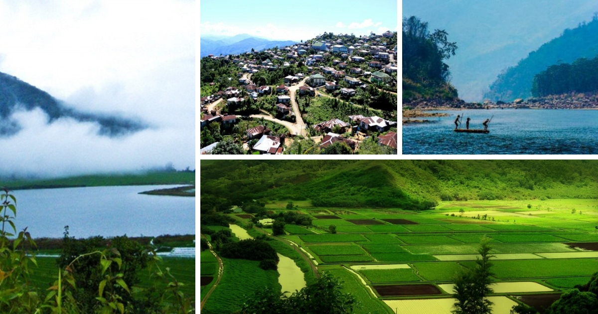

Mizoram is a state in northeastern India, with Aizawl as its capital city.
The name is derived from "Mizo", the name of the native inhabitants,
and "Ram", which means land, and thus Mizoram means "land of the Mizos".
Capital: Aizawl
Governor: P. S. Sreedharan Pillai
Chief minister: Zoramthanga
Population: 11.2 lakhs (2014)
Union territory: 21 January 1972

Climate
Mizoram has a mild climate, being relatively cool in summer 20 to 29 °C (68 to 84 °F)
but progressively warmer, most probably due to
climate change, with summer temperatures crossing 30
degrees Celsius and winter temperatures ranging from 7
to 22 °C (45 to 72 °F).
Best time to visit
The best months to visit Mizoram are November to March because
these months are ideal as the weather is pleasant and touring around
can be fun. The temperature during these months varies from 11°C to 30°C.
How can you reach Mizoram?
Air - Aizawl has a domestic airport and is well-connected to many cities like Guwahati,
Imphal and Kolkata through regular daily flights.
Train - Mizoram is connected through its rail head in Bairabi in Kolasib District.
Road - Mizoram is connected through National Highway 54 from Silchar, Assam.